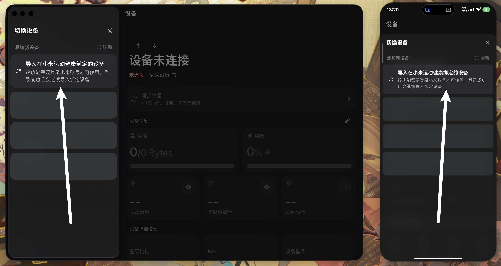

用 iPhone 连 REDMI Watch 装快应用？我差点把手表退了
新入手的 REDMI Watch 5 配上 iPhone，想装个番茄钟快应用死活装不上，蓝牙配对反复断、界面全是英文报错。直到有人甩给我 AstroBox——然后我才知道，iOS 连小米系手表装快应用，根本不是「配对就行」那么简单。
那块表，我差点退了
事情从上周六下午开始。我在京东下单的 REDMI Watch 5 送到家，包装比想象中小一圈，灰色表带摸起来意外柔软——这是我第一次买穿戴设备，之前用了三年的机械表，觉得手机上的时间够看了，直到同事在茶水间晃着他的手环说「你知道吗，睡觉也能监测心率」。
冲动消费。拆开后第一件事，打开小米运动健康，点「添加设备」，选 REDMI Watch 5，蓝牙配对，手表震了一下，点勾，连上了。一切都很顺。
然后我想装个番茄钟快应用——小米手表自带的运动记录还行，但专注计时功能太简陋。于是我打开手表里的应用中心，找了一圈，发现免费的番茄钟没几个，而且有的图标上还打了个小锁。我不死心，上网搜「REDMI Watch 5 第三方快应用」，结果出来一堆「用 AstroBox 安装」的教程。
教程写得很简单：连接设备，导入 .rpk 文件，点安装。我按步骤来——连接这步用小米账号倒是一把就成了，账号下只有这一块设备，扫码登录后自动识别出来了。但到了安装阶段，进度条走到三分之一就卡住，然后弹一个英文错误框，大意是「无法建立安装通道」。我换了三个快应用试，结果一模一样。
那天下午我折腾了四个小时。重启手表、删了小米运动健康重装、换路由器的 WiFi、用手机流量——连手表都恢复出厂设置了两次。最后一次装完又失败，我盯着那个英文弹窗，认真地打开了京东的退换货页面，填好了退货申请。
朋友甩来的不是安装包，是一条链接
周日早上本来打算寄快递，刷朋友圈的时候看到大学同学发了一张手表截图——正是 REDMI Watch 5，而且表盘上赫然显示着一个叫「Forest」的第三方专注应用。我直接私信：「你快应用哪装的？我 iPhone 连的，死活装不上。」
他回得很快：「用 AstroBox 啊。iOS 连小米手表装快应用要开个安卓伪装开关，你不知道？」
两个信息砸过来。第一，原来还有个叫 AstroBox 的东西，它的官网上写得很清楚——不是小米官方的，但专门做穿戴设备的资源管理。第二，iOS 连小米系手表装快应用要开什么伪装。我之前搜的那些教程没一个提这事——要么是安卓用户写的，要么是没写全。
我问他要了 AstroBox 的下载方式，从官方下载拿了 iOS 安装包，装在我 iPhone 上。打开后界面挺清爽，先登录小米账号同步了手表——这次是在 AstroBox 里登，不是在小米运动健康里，扫码、完成二次验证，三十秒搞定。

那个藏得挺深的开关
同步完手表，我没急着装快应用。先翻了翻设置——毕竟朋友说有个开关要开。找了大概两分钟，在设备的详细设置里看到一个叫「安卓伪装」的选项，开关默认是灰的。
开启它，断开手表连接，重新连回来。这步花了大概三分钟——断开要等手表提示「已断开」，重新连接又要在手表上点两次蓝色的勾。连上之后回到资源安装页面，选了之前那个番茄钟快应用。
进度条动了。三分之一——之前卡的位置——过了。二分之一。四分之三。安装完成。手表震了一下，主界面多了个红色的小番茄图标。
那一刻我盯着手表屏幕，感觉这四个小时的折腾值了。我还以为是自己哪里操作有问题，原来是 iOS 连接协议和快应用之间有个天生的兼容性障碍，需要这么一个中间层来「伪装」一下才能打通。
顺手又装了几个
既然开关开了，我又装了两个快应用——一个白噪音助眠的，一个看天气的——都顺利装上了。顺便发现 AstroBox 还有个 CDN 测速功能，打开后自动选最快的下载节点，五级颜色标识快慢程度，北京的节点显示绿色，广州是黄色，自动选最快那条。看了AstroBox文档才知道这个测速功能是 2.1 版本重构的，之前是用 HEAD 请求探测不准，现在改成真实图片下载耗时，还能后台静默切换。我之前在小区 WiFi 下装不上，可能也跟这个有关——测速选了个慢节点，安装包下载超时了。
另外还发现，表盘也是 AstroBox 能装的东西。官方表盘大多是免费的，但第三方创意表盘要在小米商店付费，而 AstroBox 的资源中心里有很多爱好者分享的免费表盘，拖动 .rpk 文件就能装，不用越狱也不用改系统。
那块表我没退
现在我的 REDMI Watch 5 主界面上，番茄钟、白噪音、天气三个快应用并排，每天上下班路上我会开番茄钟刷几页书，晚上睡觉前开白噪音。同事问我怎么装这么多应用，我随口说「用 AstroBox 开个伪装就行」，他一脸茫然。
后来我又去翻了 AstroBox 的文档，才知道不仅 REDMI Watch 5 和小米 Watch S3 需要这个伪装，REDMI Watch 6 以及未来的小米手表系列，iOS 连接装快应用都要开这个开关——因为快应用最初是为安卓环境设计的，iOS 上的连接协议略有差异，AstroBox 就是在通信时假装自己是一台安卓设备，绕过这个限制。小米手环 9 系列反而不用，因为手环的快应用机制和手表不一样。
还有个有意思的细节：2.1 版本之后，AstroBox 打开时会自动测试所有 CDN 节点，选最快那条线路，如果上次选中的节点还是最快的，直接沿用，不用每次都测速。后台还能静默切换，网络波动的时候自动换线路，不打断下载。
我甚至没把退货申请撤掉——让它自己超时失效吧，权当给那天的坏心情留个纪念。那块灰色表带的表，现在每天戴在手上，屏幕亮着的时候，是我用 iPhone 折腾四个小时才换来的番茄钟倒计时。
顺便提一下，AstroBox 的这套资料我在三个仓库都存了一份——GitHub 是主仓库，Gitee 和 GitCode 各同步一份——主要是怕 GitHub 偶尔抽风访问不了，国内用 Gitee 快一些，GitCode 做个备份。